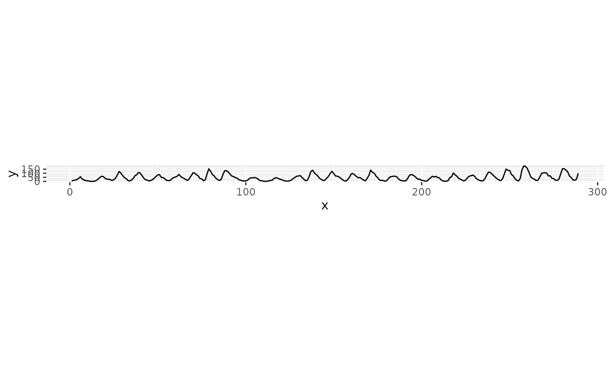

A convenience wrapper around bank_slopes_multiscale that
extracts y directly from an already-specified ggplot and
returns one copy of the plot per scale of interest, each with the
appropriate coord_fixed applied. The result is the
small-multiples display used throughout Heer and Agrawala (2006): the same
data, banked to reveal trends at different frequencies.
Usage
bank_plot_multiscale(
plot,
method = c("ms", "as", "ao", "was"),
cull = TRUE,
layer = 1,
...
)Arguments
- plot
A
ggplotobject.- method, cull, ...
Passed to
bank_slopes_multiscale.- layer
Integer. Which layer of
plotto extractyfrom. Defaults to the first layer.
Value
A named list of ggplot objects, one per retained
scale, in ascending order of frequency and named by frequency index.
Details
Multi-scale banking is defined on the frequency domain of a single series
sampled on a regular grid, so unlike bank_plot this function
requires the chosen layer to hold exactly one series with evenly spaced
x values.
References
Heer, Jeffrey and Maneesh Agrawala, 2006. "Multi-Scale Banking to 45." IEEE Transactions On Visualization And Computer Graphics 12(5).
Examples
library("ggplot2")
y <- as.numeric(sunspot.year)
p <- ggplot(data.frame(x = seq_along(y), y = y), aes(x = x, y = y)) +
geom_line()
# One plot per scale of interest, named by frequency index.
plots <- bank_plot_multiscale(p)
names(plots)
#> [1] "7" "31"
## Low-frequency trend across sunspot cycles
plots[[1]]
 ## The individual 11-year cycles
plots[[2]]
## The individual 11-year cycles
plots[[2]]
